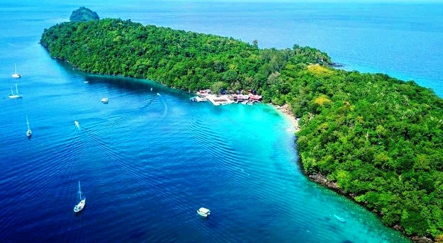

Sejarah
Kesultanan Aceh Darussalam (bahasa Aceh: Keurajeuën Acèh Darussalam; Jawoë: كاورجاون اچيه دارالسلام) merupakan sebuah kerajaan Islam yang pernah berdiri di provinsi Aceh, Indonesia. Kesultanan Aceh terletak di utara pulau Sumatra dengan ibu kota Banda
Aceh Darussalam dengan sultan pertamanya adalah Sultan Ali Mughayat Syah yang dinobatkan pada Ahad, 1 Jumadil awal 913 H atau pada tanggal 8 September 1507. Dalam sejarahnya yang panjang itu (1496 - 1903), Aceh mengembangkan pola
dan sistem pendidikan militer, berkomitmen dalam menentang imperialisme bangsa Eropa, memiliki sistem pemerintahan yang teratur dan sistematik, mewujudkan pusat-pusat pengkajian ilmu pengetahuan, dan menjalin hubungan diplomatik
dengan negara lain, Aceh merupakan salah satu provinsi dari 34 provinsi yang terdapat di Indonesia dan merupakan daerah yang mayoritas penduduknya beragama Islam.
Salah satu cerita rakyat memaparkan bahwa dulu ada sebuah kapal Gujarat (pedagang dari India) yang berlayar ke Aceh dan tiba di Sungai Tjidaih. Para anak buah kapal Gujarat tersebut lantas naik ke darat dan pergi ke kampung Pande.
Akan tetapi, dalam perjalanan tiba-tiba hujan turun, sehingga mereka harus berteduh di bawah sebuah pohon. Pohon tersebut terlihat sangat rindang dan indah. Berkat keindahannya, mereka pun memuji pohon itu dengan kata aca, aca,
aca, yang artinya indah. Konon, dari kata aca itulah kemudian lahir nama Aceh.
Geografis
Provinsi Aceh terletak antara 01o 58' 37,2" - 06o 04' 33,6" Lintang Utara dan 94o 57' 57,6" - 98o 17' 13,2" Bujur Timur dengan ketinggian rata-rata 125 meter di atas permukaan laut. Pada tahun 2012 Provinsi Aceh dibagi menjadi 18 Kabupaten dan 5 kota,
terdiri dari 289 kecamatan, 778 mukim dan 6.493 gampong atau desa. Batas-batas wilayah Provinsi Aceh, sebelah Utara dan Timur berbatasan dengan Selat Malaka, sebelah Selatan dengan Provinsi Sumatera Utara dan sebelah Barat dengan Samudera
Indonesia. Satu-satunya hubungan darat hanyalah dengan Provinsi Sumatera Utara, sehingga memiliki ketergantungan yang cukup tinggi dengan Provinsi Sumatera Utara. Luas Provinsi Aceh 5.677.081 ha, dengan hutan sebagai lahan terluas
yang mencapai 2.290.874 ha, diikuti lahan perkebunan rakyat seluas 800.553 ha. Sedangkan lahan industri mempunyai luas terkecil yaitu 3.928 ha.
Provinsi Aceh sangatlah luas dan meliputi Pulau Sumatra.
Wisata
Tempat rekreasi atau wisata khususnya di Provinsi Aceh sangatlah banyak namun saya memberikan rekomendasi tempat wisata terbaik yang terdapat di Aceh. Lokasi suaka alam/objek wisata alam yang terkenal di Provinsi Aceh mulai dari: Taman Nasional Gunung
Leuser, Cagar Alam Jantho, Pulau Rubiah dan Pulau Weh yang terdapat di Sabang.
Taman Nasional Gunung Leuser
Berada Taman Nasional Gunung Leuser (biasa disingkat TNGL) adalah salah satu Kawasan Pelestarian Alam di Indonesia seluas 1.094.692 hektare yang secara administrasi pemerintahan terletak di Provinsi Aceh dan Sumatra Utara.
Cagar Alam Jantho
Cagar Alam Hutan Pinus Jantho adalah cagar alam yang berada di wilayah Jantho, Kabupaten Aceh Besar. Jenis cagar alam ini termasuk dalam kawasan konservasi di galur Aceh. Penetapan batas wilayahnya ditetapkan berdasarkan Surat Keputusan
Menteri Kehutanan Nomor 186 tahun 1984. Saat penetapan luas wilayahnya adalah 16.640 hektar. Luasnya berkurang menjadi 15.356.49 hektar setelah diadakan evaluasi pada tahun 2015. Evaluasi diadakan berdasarkan kepada Surat Keputusan
Menteri Lingkungan Hidup dan Kehutanan Nomor 101 tahun 2015 tentang luas Cagar Alam Pinus Jantho.
Pulau Rubiah

Taman Laut Pulau Rubiah Merupakan sebuah pulau cantik yang masih asri dengan luas wilayah sekitar 2.600an Hektar yang terkenal dengan pemandangan alam kerajaan bawah laut nya. Keadaan alam bawah laut yang masih asri dan alami dengan berbagai macam biota
laut yang hidup sehingga membuat pengunjung yang datang betah berlama-lama di pulau ini.
Pulau Weh
Pulau Weh (atau We) atau dikenal juga dengan Pulau Sabang adalah pulau vulkanik kecil yang terletak di barat laut Pulau Sumatra. Pulau ini pernah terhubung dengan Pulau Sumatra, namun kemudian terpisah oleh laut setelah meletusnya gunung berapi terakhir
kali pada zaman Pleistosen. Pulau ini terletak di Laut Andaman. Kota terbesar di Pulau Weh, Sabang, adalah kota yang terletak paling barat di Indonesia. Pulau ini terkenal dengan ekosistemnya. Pemerintah Indonesia telah menetapkan
wilayah sejauh 60 km² dari tepi pulau baik ke dalam maupun ke luar sebagai suaka alam. Hiu bermulut besar dapat ditemukan di pantai pulau ini. Selain itu, pulau ini merupakan satu-satunya habitat katak yang statusnya terancam, Bufo
valhallae (genus Bufo). Terumbu karang di sekitar pulau diketahui sebagai habitat berbagai spesies ikan.